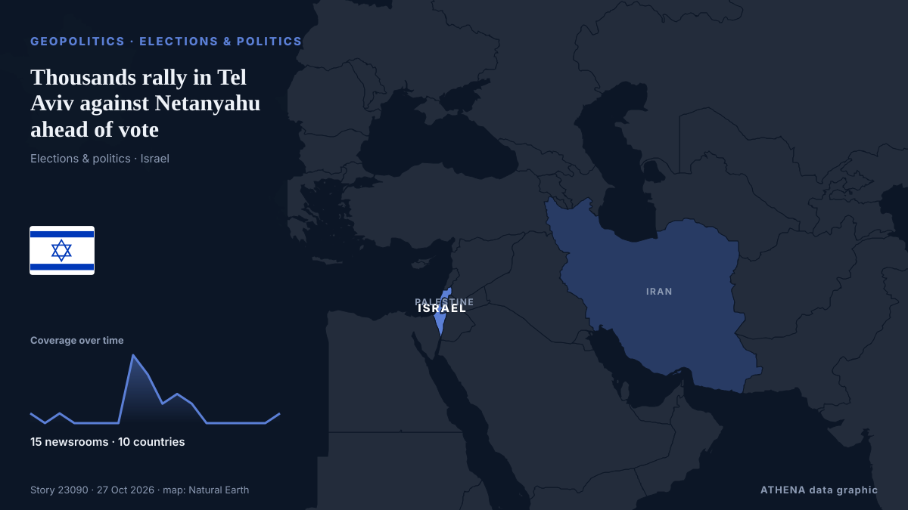

Thousands rally in Tel Aviv against Netanyahu ahead of vote

Thousands of people rallied in Tel Aviv against Israeli Prime Minister Benjamin Netanyahu, days before a general election. من Arab News
نشرته بشكل مستقل 15 مصدرًا في 10 دول منذ 22 أكتوبر، وأول من نشره Haaretz (English)؛ والتغطية تتراجع. يقدّر ATHENA الخطر بأنه متزايد (5.0/10)، ويعود ذلك أساسًا إلى خطورة الضرر الموصوف ونطاقه الجغرافي والقطاعي. الثقة 87٪ (مرتفعة)، وعدد المصادر المستقلة المؤكِّدة: 15، بمتوسط موثوقية للمصادر يبلغ 75٪.
لماذا يهم: تتابع هذه الصفحة النزاع الذي يشمل إسرائيل وغزة والضفة الغربية ولبنان — التطورات العسكرية والوضع الإنساني والدبلوماسية — كما تغطيه وسائل الإعلام حول العالم.
ما الذي تغيّر: تقرير جديد واحد خلال 24 ساعة حتى 27 أكتوبر.
تُعرض العناوين بالإنجليزية كما نُشرت.
نظرة سريعة
اختير وقُيِّم وكُتب وفق منهجية ATHENA المنشورة. لا يتدخل أي محرر في الأحداث بعينها. كيف يُنتَج ›
| 22 Oct 20:16 UTC | 1 |
|---|---|
| 23 Oct 02:16 UTC | 0 |
| 23 Oct 08:16 UTC | 1 |
| 23 Oct 14:16 UTC | 0 |
| 23 Oct 20:16 UTC | 0 |
| 24 Oct 02:16 UTC | 0 |
| 24 Oct 08:16 UTC | 0 |
| 24 Oct 14:16 UTC | 7 |
| 24 Oct 20:16 UTC | 5 |
| 25 Oct 02:16 UTC | 2 |
| 25 Oct 08:16 UTC | 3 |
| 25 Oct 14:16 UTC | 2 |
| 25 Oct 20:16 UTC | 0 |
| 26 Oct 02:16 UTC | 0 |
| 26 Oct 08:16 UTC | 0 |
| 26 Oct 14:16 UTC | 0 |
| 26 Oct 20:16 UTC | 0 |
| 27 Oct 02:16 UTC | 1 |
| 23 Oct 06:43 UTC | 4.0 |
|---|---|
| 23 Oct 09:51 UTC | 3.3 |
| 24 Oct 18:25 UTC | 5.1 |
| 27 Oct 07:36 UTC | 5.0 |
لماذا هذه الأرقام
الأهمية
الخطر
الثقة
التغطية — من نشر الخبر ومتى
العنوان كما نُشر · يفتح الأصل- Haaretz (English) · إسرائيل · IsraelOctober 7 victims' families to hold Election Day protests across Israel, urging voters to remember the dead
- Haaretz (English) · إسرائيل · IsraelElections committee denies Likud request to bar broadcasting of October 7 probe rally ahead of election
- Haaretz (English) · إسرائيل · IsraelThousands across Israel protest Netanyahu government three days before the election
- Arab News · المملكة العربية السعودية · Saudi ArabiaThousands rally in Tel Aviv against Netanyahu ahead of vote
- The Jerusalem Post · إسرائيل · IsraelOver 100,000 rally in Tel Aviv demanding commission of inquiry into failures during October 7
- France 24 English · فرنسا · FranceThousands take to Tel Aviv's streets for protests against Netanyahu
- NDTV · الهند · IndiaThousands Protest Against Netanyahu In Tel Aviv Ahead Of Vote
- Al-Monitor · الولايات المتحدة · United StatesThousands rally in Tel Aviv against Netanyahu ahead of vote
- Al Jazeera English · قطر · QatarThousands of Israelis rally against Netanyahu gov’t days before election
- The Jerusalem Post · إسرائيل · IsraelPolice arrest 23-year-old suspected of attacking one of Bennett's bodyguards in Tel Aviv
- CNA (Channel NewsAsia) · سنغافورة · SingaporeThousands rally in Tel Aviv against Netanyahu ahead of vote
- Fortune · الولايات المتحدة · United StatesIsraelis hold final rally against Netanyahu ahead of what may be the most consequential election in the country’s history
- ABC News Australia · أستراليا · AustraliaThousands rally in Tel Aviv against Netanyahu ahead of vote
- The Straits Times · سنغافورة · SingaporeThousands rally in Tel Aviv against Netanyahu ahead of vote
- Mehr News (English) · إيران · IranThousands protest against Netanyahu ahead of elections
- Haaretz (English) · إسرائيل · IsraelAs the hard right fears historic defeat, armed settler convoys in Tel Aviv carry a message
- Khaama Press · أفغانستان · AfghanistanThousands of Israelis Rally Against Netanyahu Ahead of Parliamentary Election
- France 24 English · فرنسا · FranceIsrael: Demonstrators rally against government ahead of election
- The Jerusalem Post · إسرائيل · IsraelNetanyahu shares AI-generated image of nuclear explosion in Tel Aviv, two days before election
- NDTV · الهند · IndiaNetanyahu Shares AI Image Of Nuclear Blast In Tel Aviv 2 Days Ahead Of Polls
- Tehran Times · إيران · IranMass rally against Netanyahu government just ahead of elections
- Haaretz (English) · إسرائيل · Israel'Vote for accountability': October 7 families gather in Tel Aviv on Election Day